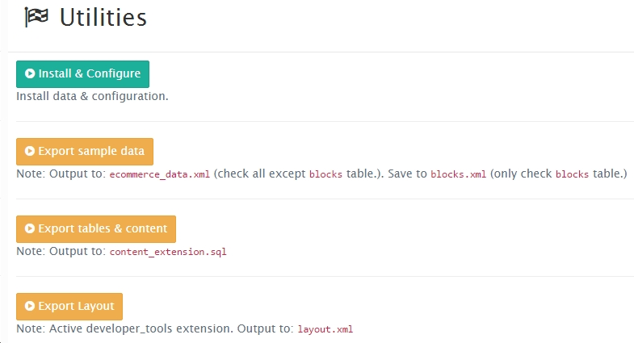
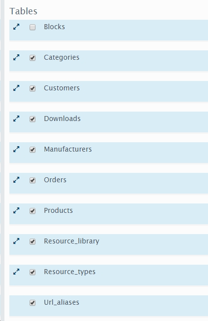
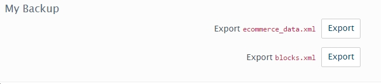

Backup dữ liệu¶
Dành cho theme developer¶
Sau khi chúng ta xây dựng một theme hoàn chỉnh, bây giờ đến bước backup lại dữ liệu để đóng thành demo theme.
Cấu trúc theme demo¶
- data/ - dữ liệu website.
- blocks.xml
- layout.xml
- ecommerce_data.xml
- content_extension.sql
- files/ - chứa files tài nguyên (ie: ảnh,..)
- download/
- image/
- resources/
Và cộng thêm cả thư mục theme của bạn.
Thực hiện các bước sau: Truy cập System > Settings > My Settings.
Theo như hình trên, nhấn vào nút Export sample data để xuất file ecommerce_data.xml và blocks.xml. Chú ý: với file ecommerce_data.xml chọn toàn bộ các mục nhưng trừ Blocks.
Ngược lại với blocks.xml chỉ chọn mục Blocks. Mục ‘File Format’ chọn XML. Trường ‘File Name’ điền ‘blocks’ & nhấn Export
Bạn cũng có thể sử dụng 2 nút Export để tải files về.
Để Export content_extension.sql click vào nút Export tables & content.
Chú ý: để cập nhật ngày, bạn làm một bước nữa là thay thế ngày thành hàm sql như sau:
Mở file .sql với phần mềm notepad++, check vào ‘Regular expression’.
Lần 1:
- Find what:
'2016.+', - Replace with:
now\(\),
Lần 2:
- Find what:
'2016.+'\) - Replace with:
now\(\)\)
Để export layout.xml, nhấn nút Export Layout.